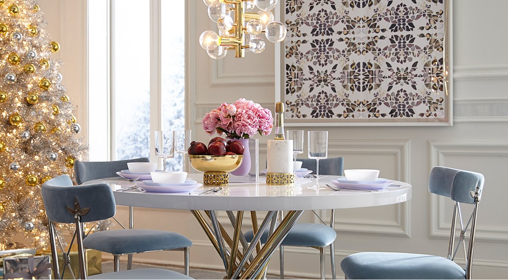
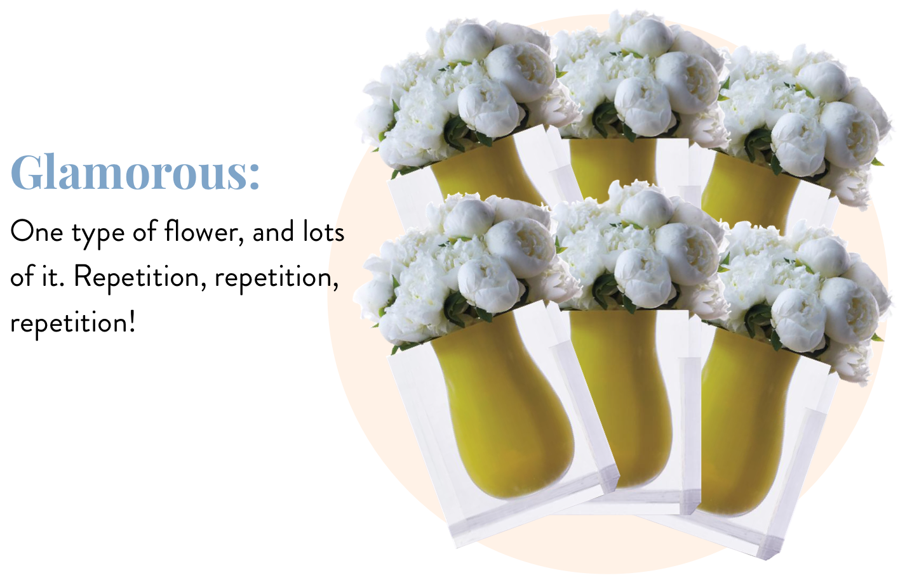
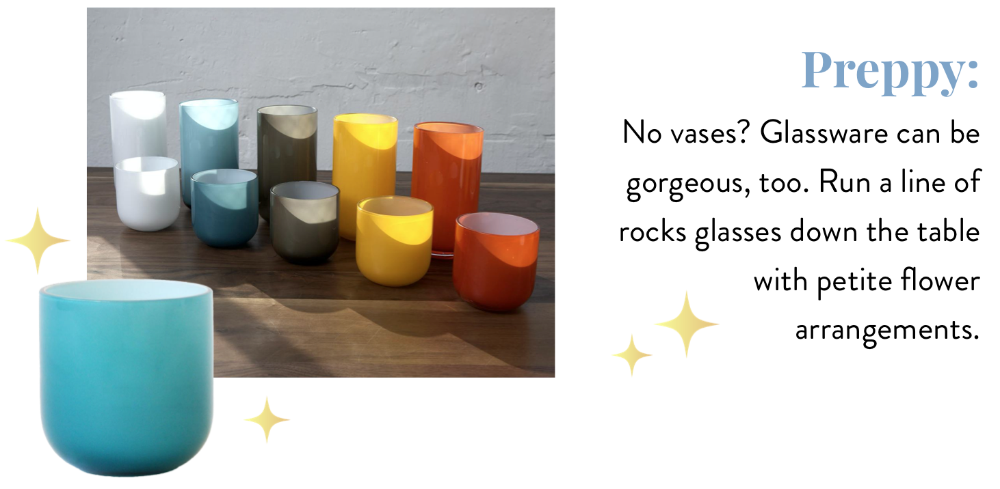

THE KNOW-HOW:
SET A
STYLISH TABLE

Whether you’re dreamy, preppy, or glamorous, there’s a table setting for you. Not sure where to start? Check your closet.
Full of flowy linen in earthy tones? You’re down for dreamy dining. Do printed Lily Pulitzer dresses add joie de vivre to your day-to-day? Pop something preppy on the table. Got a personal shopper on speed dial? Oh glamorous, girl!
Surprising Centerpieces

Bel Air Vase
Multitaskers Multiply
The Chic Factor

Pop Rocks Glass
Always Go For Gold
No matter what your style is: Gold, gold, gold. Just when you think you have enough, add more gold.
Killer Highlights
Always buy a chandelier that is bigger than you think you need. And make sure it’s on a dimmer. Harsh lighting harshes your mellow, and your meal.